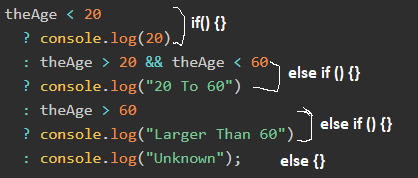
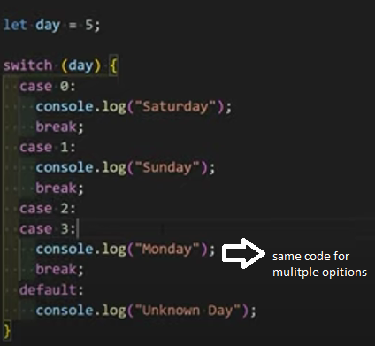
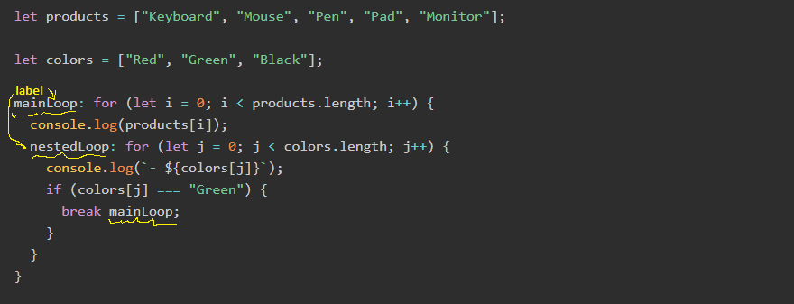
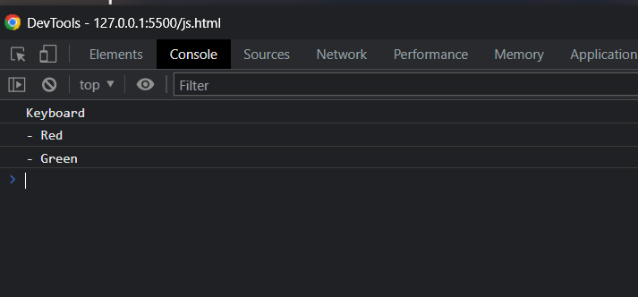
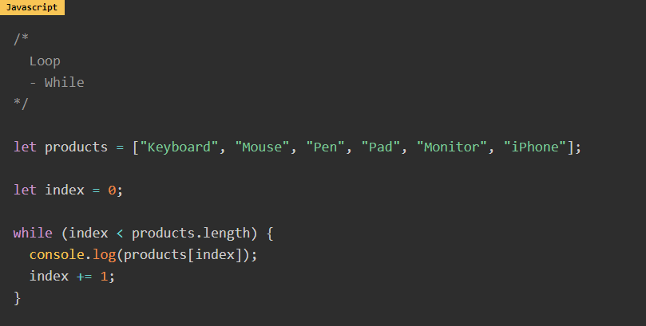
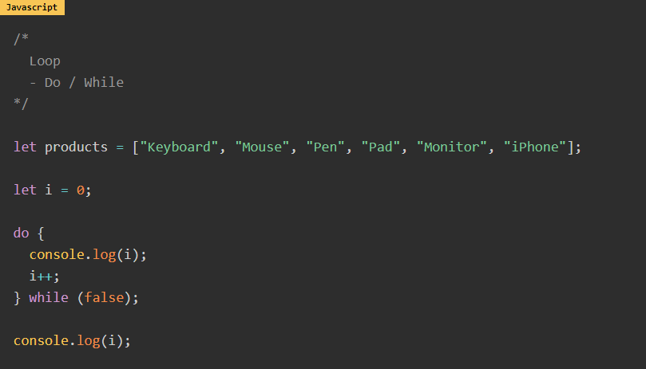
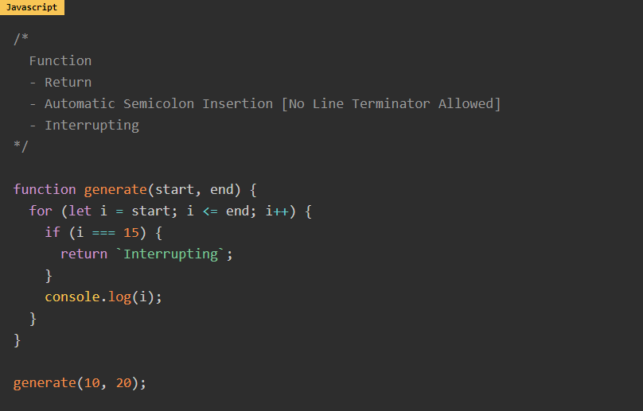

elzero 2022
19- Unray operators (plus and negative)
it's used to turn string into number
console.log(+"100") => 100 as a number
unary operators VS number() Vs parseInt()
according to the best answer in
stack overflow
unary operators and number() are the same they try to change the
whole string into a number
trying console.log(+"100px") will
return
NaN
but as for parseInt("100px") it will
return 100
as the mechansim of parseInt is it
keeps returning numbers found in
the string untill it encounteres string that is not a number so it
ignores all characters after that
also
Number() and
unray
evaluate whatever you give to them
for example:
Number("") => 0
where
parseInt("") => NaN
24- Number methods
(100).toString(); => "100"
100..toString(); => "100"
the extra dot is for the editor as it expects something like 100.5
so you put the extra dot to tell it it's for the function
100.55555.toFixed(2); => 100.56
parseInt("100"); => 100
parseInt("100px"); => 100
parseInt("px100"); => NaN
parseInt("100.55"); => 100
parseFloat("100.55px"); => 100.55
Number.isInteger("100"); => false
Number.isInteger(100); => true
Number.isInteger(100.55); => false
Nubmer.isNan(100); => false
Nubmer.isNan("lol"); => true
Number("100px"); => NaN
Number("100"); => 100
Number("100.4"); => 100.4
25- Math object
Math.round(99.2); => 99
Math.round(99.5); => 100
Math.ceil(99.2); => 100
Math.floor(99.9); => 99
Math.min(10, 20, 100, -100, 90); => -100
Math.max(10, 20, 100, -100, 90); => 100
Math.pow(2, 4); => 16
also
you can use 2**4 to give you the
same results
console.log(2**4) => 16
Math.trunc(99.5); => 99
Math.trunc(99.2); => 99
returns the integer number and removes the decimals
27- string methods
'hola'[0] => h
'hola'[2] => l
'hola'.charAt(0) => h
'hola'.charAt(2) => l
' hola '.trim() => 'hola'
removes the spaces from the start and the end of the string
'hola'.toUpperCase() => HOLA
'hola'.toLowerCase() => hola
' hola '.trim().charAt(2).toUpperCase() => L
you can use more than one method together
28- string methods part 2
"Elzero Web School".indexOf("Web");
=> 7
"Elzero Web School"
.indexOf("Web", 8);
=> -1 (which means error or didn't find what you looking for) and
(the second argument "8" is the start of searching and it's
optional)
"Elzero Web School".indexOf("o"); =>
5
"Elzero Web School".lastIndexOf("o");
=> 15
"Elzero Web School".slice(2, 6) =>
"zero" (last index is not included so the space after the "o"
wasn't included) and (both arguments are indexes)
"Elzero Web School".slice(-5, -3);
=> "ch" (when negative numbers it starts from -1 not -0 obviously)
and (still last index is not included)
"Elzero Web School".slice(6, 2); =>
if the first argument is greater than the second it returns
empty string ''.
"Elzero Web School".repeat(5); =>
"Elzero Web SchoolElzero Web SchoolElzero Web SchoolElzero Web
SchoolElzero Web School"
"Elzero Web School".split("", 6); =>
['E', 'l', 'z', 'e', 'r', 'o']
(6 here is length of the array not an index. the length is 6 it
stops at index 5)
"Elzero Web School".split(" "); =>
['Elzero', 'web', 'school']
29- string method part 3
"Elzero Web School".substring(2, 6);
=> "zero" (last index not included)
difference between
.substring() and .slice()
.substring() you can switch values
with it while with .slice() you
can't
"Elzero Web School".substring(6, 2);
=> "zero" (it switches the two argument in case the first one is
greater than the second one so behind the scenes its (2, 6))
"Elzero Web School".slice(6, 2); =>
''
nothing
.substring() treats any negative
value as 0 while .slice() deals with
negative values normally
"Elzero Web School"
.substring(-10, 9);
=> "Elzero we" (any negative value is treated as 0 so behind
scenes it's (0, 9))
"Elzero Web School".slice(-10, 9);
=> "We"
"Elzero Web School".substring(a.length - 5, a.length - 3);
=> "ch"
(a) here is a varible with the senetence "Elzero Web School"
stored in it
"Elzero Web School".substr(0, 6); =>
"Elzero" (the second argument is a length not an index) and (the
second argument is optional if you don't type it starts from the
first argument until the end the of the string)
note that it's depercated and the quote below is from
MDN
Deprecated: This feature is no longer
recommended. Though some browsers might still support it, it may
have already been removed from the relevant web standards, may
be in the process of being dropped, or may only be kept for
compatibility purposes. Avoid using it, and update existing code
if possible; see the compatibility table at the bottom of this
page to guide your decision. Be aware that this feature may
cease to work at any time.
"Elzero Web School".substr(-3); =>
"ool"
"Elzero Web School".substr(-5, 2);
=> "ch"
"Elzero Web School".substr(-5, -2);
=> "" (it doesn't take negative lengths)
"Elzero Web School".includes("Web");
=> true
"Elzero Web School".includes("Web", 8);
=> false (the second argument is starting index and optional)
"Elzero Web School".startsWith("E");
=> true
"Elzero Web School".startsWith("E", 2);
=> false
"Elzero Web School".startsWith("z", 2);
=> true
you can use it to check if a certain character is at certain index
or not
"Elzero Web School".endsWith("l");
=> true
"Elzero Web School"
.endsWith("o", 6);
=> true (the second argument is index not a length)
31- Comparison Operators (==, ===, !=, !==, greater than, less than)
The output is true and false. Here is the explanation, In Javascript
relational operators are evaluated from left to right, false equals
0, and true equals 1 for number comparisons. So comparison
evaluation is something like this,
rest of the lesson no need for notes revise it from
elzero.org
32 - Logical Operators
Ez no notes neede revise it from
elzero.org
33 - If Conditions
note that the else if () {} will be
excuted only if the previous
condition is false
rest of the lesson doesn't need notes taken revise from
elzero.org
34 - nested if condtion
no notes needed revise the lesson from
elzero.org
35 - Conditional ternary Operator
in case you want to have else if with
ternary:

to make it easy to remember notice the sequence
? senetence : then
? senetence :
you can't end with a senetence after a (?), it should be after a (:)
revise rest of the lesson
elzero.org
36 - Nullish Coalescing Operator & Logical Or
logical or ( || )
console.log(`The Price Is ${price || 200}`);
the code above will return 200 if the price is one of the options
below:
- null
- undefind
- false
- ""
- 0
- or any falsey value
Nullish Coalescing Operator ( ?? )
console.log(`The Price Is ${price ?? 200}`);
the code above returns 200 if price is either:
and only if the variable equals
to either one of these (not any other fasley value)
37 - If Condition Challenge
38 - Switch Statement
note that swich compares with
identical operator
meaning that if your variable is like this
let myvar = "5"
this is a string variable not a number so if you write
case 5: it won't work
if you write case "5": it will work
you can put the default: statement
anywhere you want just make sure you put a
break; statement with it if you
don't put it at the end

39- Array big introduction
to check if the varibale is array or not
console.log(Array.isArray(myArray))
note: that
array[-1] doesn't return the last
element in the array
in order to get the last element you either use
array[array.length-1]
or just use array.at(-1)
40- Using Length With Array
no notes needed
41- Add And Remove From Array
to add an element to the
begning of the array
myArray.
unshift(element, element, ...)
to add an element to the
end of the array
myArray. push(element, element, ...)
to remove element from the
begening of the array
myArray. shift()
note: shift() method and pop()
method return the removed element so you can use it how ever you
see, for example
let myRemoved = myArray.shift();
to remove element from
the end of the array
myArray. pop()
Note: all pervious methods make permenant changes on the main
array
43- Searching Array
let myArray = ["Ahmed", "Mohamed", "Osama", "Ahmed"]
to find index of an element in an array
myArray. indexOf("Ahmed") => 0
myArray. lastIndexOf("element") => 3
myArray. indexOf("Ahmed", 2) => 3
if the element is not found it returns -1
the second argument is the starting index of the search and it's
optional
indexOf() method wihtout the starting
index argument returns the index of the first found value even if
the value is in the array twice
44- Sorting Arrays
let myArray= [10, "sayed", "mohamed", "90", 1000, 100, 20, "10",
-20, -10]
myArray. sort() =>
[-10, -20, 10, "10", 100, 1000, 20, "20", "90", "mohamed",
"sayed"]
the main idea is it sorts the numbers from the smalles to the
largest then normal strings in the normal alphabitical order
but notice that 20 came after 1000 as the method's mechanism is it
starts with the numbers starting with 1 and sorts all numbers
starting with 1 from the smalles to the largest then goes to all
numbers starting with 2 and does the same and so on...
to reverse the order of the array
whatever the order is
myArray.reverse() => the result is
reverse of the main array that is under (heading 44- sorting
array)
[-10, -20, "10", 20, 100, 1000, "90", "mohamed", "sayed", 10]
Note: both previous methods do permenant change to the
array
45- Slicing Array (Slice & Splice)
let myFriends = ["Ahmed", "Sayed", "Ali", "Osama", "Gamal", "Ameer"]
to take sub array from this array
myFriends.
slice( starting index ,
ending index *not included in the slice* )
myFriends. slice(0,2) => ["Ahmed",
"Sayed"]
myFriends. slice(0, -2) => ["Ahmed",
"Sayed", "Ali", "Osama"]
myFriends. slice(4, 1) => []
to remove elemnts from the array
or remove and add elements at the same time
myFriends.
splice(
starting index,
numbers of elements to delete or remove,
elements to add
)
myFriends.
splice(0, 1, "marwan", "hussien") =>
["marwan", "hussien", "Sayed", "Ali", "Osama", "Gamal", "Ameer"]
removed and added items at the same time
myFriends.
splice(2, 0, "marwan", "hussien") =>
["Ahmed", "Sayed", "marwan", "hussien", "Ali", "Osama", "Gamal",
"Ameer"]
just added items without removing
myFriends.
splice(2, 1) =>
["Ahmed", "Sayed", "Osama", "Gamal", "Ameer"]
just removed element ("Ali") without adding any
Note: removed elements by splice() are returned so you can
store them in a variable or console them or whatever
Note: splice makes a permenant change on the array
46- Joining Arrays
you can use .concat() method to add
(pre declared arrays, elements or made up arrays) to some array
let allFriends = myFriends.
concat(myNewFriends, schoolFriends, "Gameel", ['hossam',
'nabil'])
to join all the array elements in one string
.join(separator)
myFriends. join("|") =>
Ahmed|Sayed|Ali|Osama|Gamal|Ameer
myFriends. join() =>
Ahmed,Sayed,Ali,Osama,Gamal,Ameer
47- Loop-For And Concept Of Loop
no notes needed
48- Looping On Sequences
no notes needed
50- Nested Loops And Trainings
no notes needed
break; & continue;
1- break;
is used to break the loop at certain condition
note: any code after the
break; statement or even after the
if(){} block that containes break statement will not be excuted
for(let i =0; i<5; i++) {
console.log(i);
if (i === 2) { break; }
}
this will print 0,1,2 and then break since the console.log(i) is
before the breaking.
if you place the console.log statment after the if block 2 won't
be printed
2- continue;
is used to skip an itiration
for(let i =0; i<5; i++) {
if (i === 2) { continue; }
console.log(i);
}
notice that console.log(i) is placed after if(){} block to be
skipped if the condition is true otherwise
continue; will be useless as if
console.log() is before the if(){} block, (i) will be printed then
continue; will skip the reset of the
code which is nothing (in this case)
for loop label
if you have a loop nested in a main loop and you want to break the
main loop based on a condition in the nested loop ... if you put
just break; in the nested loop it
will just break the nested loop here comes the use of labels


so in the first assumption that you just write
break; it will be excatly like
break nestedLoop;
52- Loop-For Advanced Example
no notes needed
53- practice-Add Products To Page
no notes needed, good lesson though
54- Loop-While

careful not to type the increment statement (index+=1) or whatever
the statement is; as it will cause an infinite loop to occure
55- Loop-Do While

while VS do-while
in the do while case the code will be excuted once if the
condition between the while parenthesis is false.
whereas in the while case the code will never be excuted if the
condition is false
56- Loop-challenge
no notes needed
57- Function Intro And Basic Usage
no notes needed
58- Function Advanced Examples
no notes needed
59- Function Return And Use Cases
-
any code after the
return ...; statement won't be
excuted
-
you can't but the returned code in another line
fucntion sayhi() { return
'hi'; }
=> undefiend
and you will notice the editor will make it like this
{return;
hi;}
unless you write it like that
return (
'hi');
-
you can use the
return ...; statement to break a
loop in a function

notice that the 'interrupting' sentence is not printed in the
console as we didn't call the fucntion in a console and thus it's
return is not printed
60 - Function Default Parameters
to assign default value to the functoin parameter simply add equal
sign (=) and your defalut value like a normal assignment
function sayHello(username,
age = "you didn't enter age" ) {
console.log(`hello ${username} your age is ${age}`) }
in this case if the function is called wihtout the age argument the
the message will be =>
hello osama (for example) your age is you didn't enter age
61- Function Rest Parameters
rest parameter is used when you don't know the numbers of arguments
that will be sent to the function
rest parameter is simply an array
you can use rest parameter with normal parameters like
function(param1, param2, ...otherpramas) {}
but you must put the reset parameter as the last one as by logic it
takes all the arguments sent to it so any other parameter after it
won't take any
62- Function Ultimate Practice
no notes needed, good lesson though
63- Random Arguments Function Challenge
no notes needed, good lesson though
64- Anonymous Function And Practice
no notes needed
65- Return Nested Function
no notes needed
66 - Arrow Function Syntax
no notes needed
67 - Scope-Global And Local
the usual behaviour of function when variables are used is that it
looks for the varibles inside out
meaning that it starts looking in the function scoop if it finds the
variables it uses their value inside the function (
even if they have different values outside the function
). if it doesn't find them it goes to the outer scope, if it doesn't
find them in that scope, then it goes to the outer scope if there is
and so on
68- Scope-Block
no notes needed
69- Scope-Lexical (Static)
no notes needed
70- Arrow Function Challenge
no notes needed
71- Higher Order Functions-Map
map takes three parameters
- the current element parameter (mandatory)
- the current element index (optional)
- the array map is performed on (optional)
number ten as logged in console is "this" but I still don't know
what "this" does in this situation
as far as I understood. Whatever you type as the second argument
(after the function) will be assigned to the "this" variable
if you don't but any thing "this" returns the window object
72- Higher Order Functions - Map Practice
dealing with NaN can be tricky as
typeof NaN => 'number'
NaN === NaN false
so in order to check if a given value is not a number NaN use the
following syntax
isNaN(your value)
also notice
isNaN('hola') => true
isNaN(10) => flase
make sure you don't get confused
also make sure you give
problem solvging playlist
a look
no further notes needed to be taken, but good lesson though
73- Higher Order Functions-Filter
no notes needed
74- Higher Order Functions -Filter Practice
no notes needed
75- Higher Order Functions-Reduce
the job if reducer function is as the name tells it reduces the
whole array into one value and this should be when you use it
reducer function takes 2 parameters
-
callback functoin (the actual function that makes the reductoin)
- initial value
-
acc: is a short for accumulator which is the sum variable where
you store the value from the previous calculatoin to preform on
the new value again and so on (offcourse you can call it
whatever you want)
accumulator value in the first itiration is the initial value
you set. If the initial value is not set (as it's optional) then
accumulator's value is the first element in the array
-
current: the element that will be calculated with the
accumulator. in this case the next number that will be added
current value in the first itiration is the first element of the
array if the initial value of the accumulator is set. If the
initial value is not set then since the accumulator will be the
first element the current value is the second element
-
index: index of the current element that is to be calculated
with the accumulator
so in the first itiratoin if the initial value is set index = 0
the first index in the array, if the initial value is not set
index = 1 the second value of the array
- arr: is the array being travested through
of course you can name these parameters any name you want
index, arr parameters are optional
76- Higher Order Functions-Reduce
no notes neede
77- Higher Order Functions-ForEach And Practice
forEach doesn't return any thing it just applies the callback
function on each element of the array
no further notes needed
78- Higher Order Functions - Challenge
79 - Object - Introduction
no notes needed
80 - Dot Notation vs Bracket Notation
the property "the country" is between qoutatoins because it's
non-valid identifier as it
contains space (other characters that make the identifier not
vaild the hyphen (-) and starting with numbers ("1st country") and
so on)
bracket notaion
accepts non-vaild
identifier while dot notaion doesn't
user["the country"] => egypt
user."the country" => error
bracket notaion accepts varibales with the same name of an
existing property, while dot notaion doesn't
user[dynamicProp] => egypt
user.dynamicProp => error
bracket notation also accpets normal properties
user["name"] => osama
note the property is between quotes otherwise it will tell you it is
not defined variable
81 - Nested Object And Advanced Trainings
notice when we wanted to access a property of the object we accessed
it like usual
if the code was like
available === true
the code will tell you it's an un-defined variable as it thinks it's
a global-scope variable
82 - Create Object With New Keyword
to add property or a method to an object
also this way is used to update an existing property
you can declare an object using the
new Keyword
let myObj =
new Object()
and you can declare it with initial properties like the normal
case
let myObj =
new Object({ age: 20, county: "egypt", })
83 - This Keyword
this is a reserved keyword and it refers to different things
depending on the context
in case of functions the general role is "this" refers to the owner
of the function
so if you write just
function() {return this;}
it will return the windowobject
but if you write the code below
document.getElementById("cl").onclick = function () {
console.log(this); };
it will return the clicked button
also if you write the code below
this will return the object which is the owner of the function
"this" is written in
note that "this" changes in
strict mode
84 - Create Object With Create Method
as far as I understood the idea of the
Object.creat(some-object)
is heritage
as you can see the properties and methods of the main object (car)
is in the prototype of the secondary object (typeA) which means all
properties and methods of the main object are available to the
secondary object
now you may want to either add another properties (futures of the
car) or methods like
but if you notice in the other console.log() the method still
returns 8 not 6 (2 less doors) why is that ?
the mistake that happened here is that in the main object you typed
"car".doors + car.wheels
so where ever you call the method it's going to go the car object
and use it's information
the solution for that problem is simply use
this
keywrod
note the O in
Object.create() is a capital letter
85 - Create Object With Assign Method
Object.assign(target-object (to copy to), object (to copy from),
object (to copy from)
let newObj = Object.assign(obj3, obj1, obj2)
it is used to copy objects to another object
what the code above basically does is that it copies the 3 objects
into another object
-
if you don't have a target object and you want to copy objects
into new object you just made. you simply type
{} in place of target object
let newObj = Object.assign({}, obj1)
-
also you can add properties while coping other objects
let newObj = Object.assign({}, obj1, {property1: 'hola',
property2: 'hii'})
if you have the same property in more than one object they simply
overwrite
the last added object had prop1 set to 1 so the final result is 1
86 - What Is DOM And Select Elements
note the difference between
document.querySelector()
and
document.querySelectorAll()
the first method gets you the first element it finds
for example
let myElement = document.querySelector('.some-class')
will return the first element with the class "some-class"
while
document.querySelectorAll('.some-class')
will get you all elements having class "some-class"
no notes needed for the rest of the lesson
87 - Get Set Elements Content And
if you use with the div above:
.innerHtml
it returns whatever html in the div
.innerText
it returns just the text inside of it and interprets the html tags
if you notice: innerHtml and innerText are properties so you can
set them as well
myDiv.innerHtml = "text from <span> js </span> file"
the result is
text from js file
myDiv.innertext = "text from <span> js </span> file"
the result is
text from <span> js </span> file
so you can easly type html tags with js instead of typing html
entities like "& lt" and "& gt"
to access the document images
document.images => returns an html
collection that you can handle like an array
(document.images[0].alt)
you can get and set attributes
document.images[0].src = https//:google.com
and if you type an attribute that is not in the img it will add it
to add class attribute documnet.images[0].
className
all these things can be done to any element
myElemnt.getAttribute("class") gets
you the attribute between the ("")
myElemnt.setAttribute("class", "updated")
sets the attribute (first parameter) to the new value (second
parameter)
88 - Check Attributes And Examples
myElement.attributes returns a NodeMap
with all the attributes in the element that you can handle like an
array
note that there's no () after .attributes
myElement.hasAttribute('class')
returns ture of false depending on whether the element has the given
attribute (class in this example) or not
myElement.removeAttribute('class')
removes the attribute from the element
notice that it removes the attribute from the element not just
setting the attribute to ""
myElement.hasAttributes() returns true
or false dependingon wheather the element has any attributes or not
notice they are attribute"s" (plural) not attribute
also you don't type anything in the ()
89 - Create And Append Elements
myElement = document.createElement('div')
to create an element (div in the example)
notice that it just creates the element but doesn't add it to the
body untill you add it (using .appendChild() or any other method)
myText = document.createTextNode('this is just text')
to create text
again this is just a text it's not added to any element yet
myComment = document.createComment('this is comment')
myAttr = document.createAttribute('data-custom')
to craete an attribute
to add the careated attribute to an element
myElement.setAttributeNode(myAtt)
.setAttributeNode() accepts
only created attributes, if you pass a text it throws an
error
difference between
.setAttributeNode()
and
.setAttribute()
-
in setAttribute() you need to type the value of the attribute
you are setting while in set attributeNode() you add just the
attribute without a vlaue
-
setAttribute() doesn't accept created attribute and
setAttributeNode() doesn't accept text
but notice that you can pass a string variable to
setAttribute() and it won't cause any errors
to add a child inside an element
myElement.appendChild(theElement)
with .appendChild() you can add
the text node and the comment you created in the above example
to the div and then add the div to the body
document.body.appendChild(myDiv)
90 - Product With Title And Description
no notes needed
91 - Deal With Children's
children are 2 types
elements
and nodes
- text
- spaces (consdered as text)
- comments
myElement.children to get all
"element" (not all children)
children of an element (myElement in this example)
myElement.childNodes to get all
children of the element (nodes and elements)
so in this div
myElement.children =>
htmlcollection(2) [p, span]
myElement.childNodes =>
htmlcollection(13)
- text (space)
- text (space)
- text (hello)
- text (space)
- text (space)
- p
- text (space)
- comment
- text (space)
- text (and)
- text (space)
- span
myElement.firstChild
to get whatever the first child in the element is (node or element)
myElement.firstElementChild
to get the first element child in the element
myElement.lastChild to get whatever
last child of the element is (node or element)
myElement.lastElementChild
to get the last element child in the element
92 - DOM Events
there are 2 ways to use events
-
in html code
<button onclick = 'someFunciton()'>
-
in javascript
myButton.onclick = function() {//some code here}
events mentioned in the lesson
- onclick
- oncontextmenu
- onmouseenter
- onmouseleave
- onload
- onscroll
- onresize
-
onfocus => when click on the
input filed and the typing indicator apppears
-
onblur => when you leave input
field
- onsubmit => used with forms
93 - Validate Form And Prevent Default
myButton.onclick = function (e) {e.preventDefault()}
to prevent the default behaviour of the function
you can pass any argument name you want (event or e or whatever)
rest of the lesson doesn't need notes to be taken